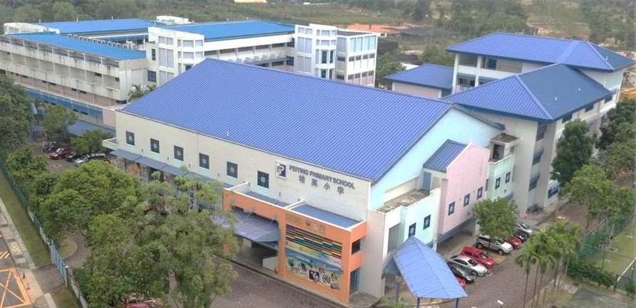
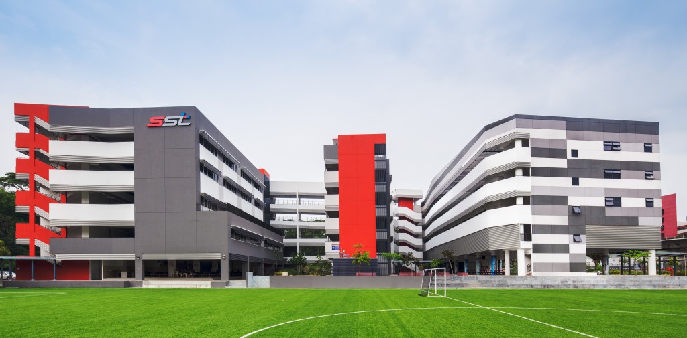

Peiying Primary School - PYPS Image by www.aeis-edu.cn. Found on Google Maps2009 - 2014, PSLEAttained T-Score: 232 I remember the test I had to do to get into this school. It seems incredibly basic back then, but at the time, not knowing how to spell at all was ok. I was at first upset that I didn't get into a school closer to my home and that I didn't get to join my friends from kindergarten. But, once lessons started proper, I quickly learned to enjoy the school, and forged friendships along the way. The year leading up to PSLE was particularly daunting, mainly due to the fact that it was my first time doing a national examination, with reminders that this number could determine my entire future. This year was also the year I got accepted into SST, however, so I actually was more relaxed than my other classmates. That isn't to say that I didn't study. In fact, I studied so much that I almost burnt out. But, with help from my private tutor, teachers and my parents, I pulled through, and got close to my targer score of 240. |
School of Science and Technology, Singapore - SST Image from sst.edu.sg2015 - 2018, 'O' LevelsAttained L1R5: 15 Attained ELR2B2: 12 I got into SST through an arduous 2-stage interview process that was counted as DSA. The first stage consisted of 2 tests that thousands of students took. It was a math test and a logic test. The logic test was not too difficult, as much of it had the testee apply common sense, but the math test was grueling, since we were not allowed to use a calculator and still do math with very large numbers. The second stage was an interview done by 3 teachers for 4-5 students at a time. We were assigned a single 'project' to work on, in my case it was to design and build a prototype boat that could hold a thousand families. We were given 15 minutes to brainstorm, then another 15 minutes to discuss amongst ourselves, then finally 5 minutes to present our craft. After the presentation, we were all sat down for an open-ended interview, where the teachers gave questions to all of us for us to answer. It was tough, but I got in in the end. SST is a specialised school, in that in place of Triple Science streaming, we are offered a 'special subject'. We have 4 options: Biotechnology, Computing, Fundamentals of Electronics and Design Studies, and we had to choose at the end of Secondary 2. I, obviously, chose Computing, which at the time was a brand new subject, meaning my cohort was the first one to take it. |